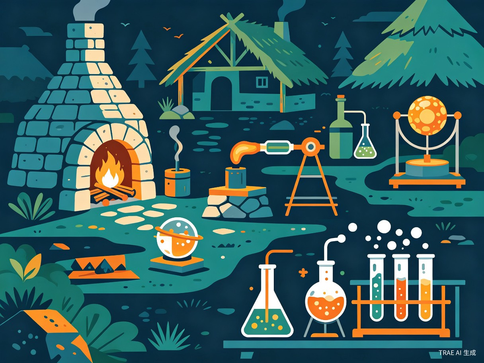

第三章：科学王国篇 — 从零到一

在建立了初步的生存基础后，千空开始向更高级的科技进军。这一篇章涵盖了电力、冶金、玻璃、塑料和抗生素等关键发明，标志着千空的科技树从原始时代正式迈入工业时代的前夜。
篇章亮点
本章是全系列科技密度最高的篇章之一。千空从静电实验开始，逐步建立起完整的化学实验室，最终合成了磺胺药物——这在人类历史上是20世纪的成就。
静电发电机Electrostatic Generator
剧中描述
千空用硫磺制作了一个球体，通过摩擦产生静电。他让琥珀转动硫磺球，用手或布摩擦球面，产生大量静电荷。
科学原理
静电发电机利用摩擦起电效应（triboelectric effect）。不同材料之间摩擦时，电子会从一个材料转移到另一个材料，导致电荷分离。
现实对照
世界上第一台静电发电机由德国科学家奥托·冯·格里克（Otto von Guericke）于1660年发明。[8]
准确性评估
用硫磺球摩擦起电的原理和操作方法与格里克的原始设计一致。
高度准确铁的冶炼Iron Smelting
剧中描述
千空利用河沙中的铁砂（磁铁矿 Fe₃O₄），建造了一座简易高炉进行冶炼。通过木炭还原铁矿石，在高温下将氧化铁还原为金属铁。
科学原理
铁的冶炼基于碳还原反应。Fe₂O₃ + 3CO → 2Fe + 3CO₂。木炭首先燃烧生成CO，CO作为还原剂将铁氧化物还原为金属铁。
现实对照
铁的冶炼起源于赫梯帝国（约公元前1800年）。真正的高炉冶炼约在15世纪的欧洲发展成熟。[9]
准确性评估
从铁砂冶炼铁的基本流程是正确的，但千空建造的高炉在原始条件下要达到足够高的温度，实际操作难度极大。
原理正确，工程难度被简化伏打电池Voltaic Pile
剧中描述
千空用铜片和锌片交替堆叠，中间夹浸有电解质（醋或盐水）的布，制成了伏打电池。
科学原理
伏打电池基于电化学氧化还原反应。锌的活泼性高于铜，在电解质中锌原子失去电子成为Zn²⁺进入溶液，电子通过外电路从锌流向铜。
现实对照
伏打电池由意大利物理学家亚历山德罗·伏打（Alessandro Volta）于1800年发明。[10]
准确性评估
伏打电池的结构和工作原理在作品中是准确的。
高度准确玻璃吹制Glass Blowing
剧中描述
千空利用沙子（SiO₂）和碳酸钠（Na₂CO₃）混合熔融，制成玻璃后通过吹管吹制成各种容器形状。
科学原理
普通玻璃（钠钙玻璃）的主要成分是二氧化硅（SiO₂），加入碳酸钠作为助熔剂降低熔点。混合物在约1500°C下熔融成粘稠液体，冷却后形成非晶态固体。
现实对照
玻璃吹制技术由古罗马人在公元前1世纪发明。[11]
准确性评估
玻璃的成分和吹制原理正确，但千空在原始条件下达到1500°C的炉温难度极大。
原理正确，操作难度被简化酚醛树脂（塑料）Phenolic Resin / Bakelite
剧中描述
千空从煤焦油中提取苯酚，与甲醛进行缩聚反应，合成了酚醛树脂——人类历史上第一种完全合成的塑料。
科学原理
酚醛树脂是苯酚与甲醛在酸或碱催化下的缩聚反应产物。交联后的酚醛树脂具有热固性，一旦成型就不会再熔化。
现实对照
酚醛树脂由比利时裔美国化学家利奥·贝克兰（Leo Baekeland）于1907年发明，商品名"电木"（Bakelite）。[12]
准确性评估
酚醛树脂的合成路线在化学上是正确的，但千空在原始条件下获取纯苯酚和甲醛的难度被大幅低估。
化学正确，原料获取难度被低估活性炭气体面具Activated Charcoal Gas Mask
剧中描述
千空用竹炭（活性炭）作为过滤材料，制成面具覆盖口鼻。活性炭的多孔结构可以吸附有毒气体分子。
科学原理
活性炭具有极大的比表面积（500-1500 m²/g），其丰富的微孔结构通过范德华力吸附气体分子。
现实对照
现代化学战防护技术的先驱是俄罗斯化学家尼古拉·泽林斯基（Nikolay Zelinsky），在一战期间（1915年）发明了基于活性炭的防毒面具。[13]
准确性评估
活性炭吸附毒气的原理正确，但竹炭的吸附效果不如专业活性炭。
原理正确，实际效果有限磺胺药物（抗生素）Sulfonamide Drugs / Antibiotics
剧中描述
为了治疗琉璃（Ruri）的肺炎，千空需要合成磺胺类药物。他制定了复杂的合成路线：从硫酸制备、碳酸钠中和、盐酸制备、苯胺合成、氯磺酸反应，最终得到磺胺（对氨基苯磺酰胺）。
科学原理
磺胺类药物的作用机制是竞争性拮抗。磺胺的化学结构与对氨基苯甲酸（PABA）相似，会竞争性地结合二氢蝶酸合成酶，阻断细菌的叶酸合成途径。
graph LR
A["硫酸 H2SO4"] --> B["碳酸钠 Na2CO3 中和"]
B --> C["亚硫酸钠 Na2SO3"]
C --> D["盐酸 HCl 酸化"]
D --> E["二氧化硫 SO2"]
E --> F["苯胺 C6H5NH2"]
F --> G["氯磺酸 ClSO3H"]
G --> H["磺胺 SNH2"]
style A fill:#2a3450,stroke:#8892a4,color:#e8ecf1
style H fill:#00d4aa,stroke:#00d4aa,color:#0a0e17
现实对照
德国病理学家格哈德·多马克（Gerhard Domagk）于1932年发现"百浪多息"（Prontosil）具有抗菌活性。多马克因此获得1939年诺贝尔生理学或医学奖。[14]
准确性评估
磺胺的合成路线在化学上基本正确，但千空在原始条件下完成多步有机合成，每一步的产率和纯度都难以保证。
合成路线正确，实际操作难度极大硝化甘油Nitroglycerin
剧中描述
千空将甘油与浓硝酸和浓硫酸的混合物反应，生成了硝化甘油——一种极其敏感且威力巨大的液体炸药。
科学原理
C₃H₅(OH)₃ + 3HNO₃ → C₃H₅(ONO₂)₃ + 3H₂O。需要浓硫酸作为脱水剂和催化剂。硝化甘油极不稳定，受震动、摩擦或加热都可能引爆。
现实对照
硝化甘油由意大利化学家阿斯卡尼奥·索布雷罗（Ascanio Sobrero）于1847年首次合成。后来诺贝尔将其吸附在硅藻土中制成"达纳炸药"（Dynamite）。[15]
准确性评估
硝化甘油的合成原理正确，但在原始条件下安全操作极其危险。
化学正确，但安全风险被严重低估